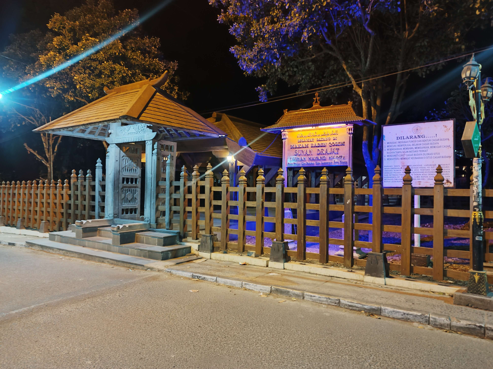
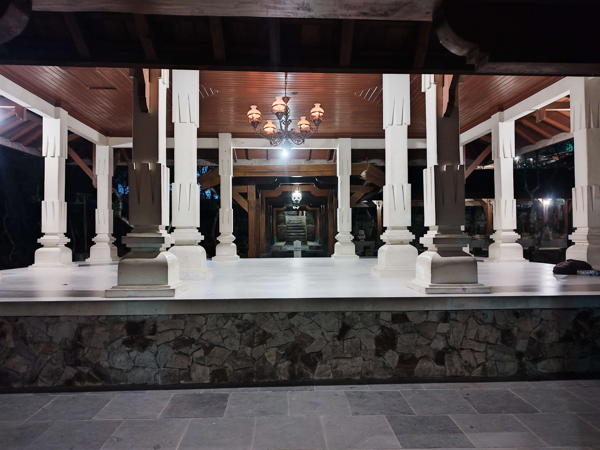
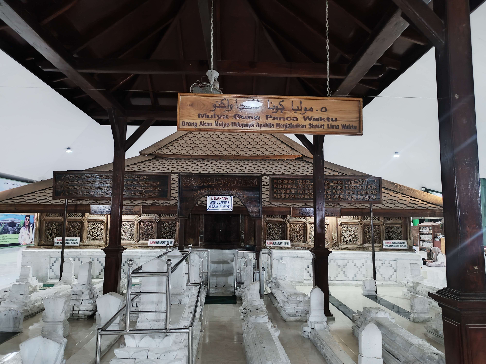
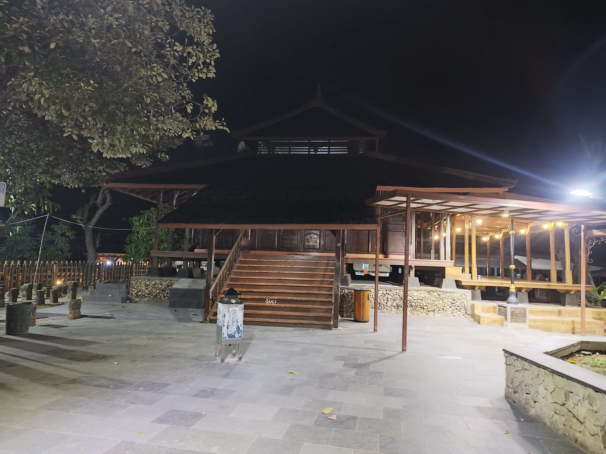
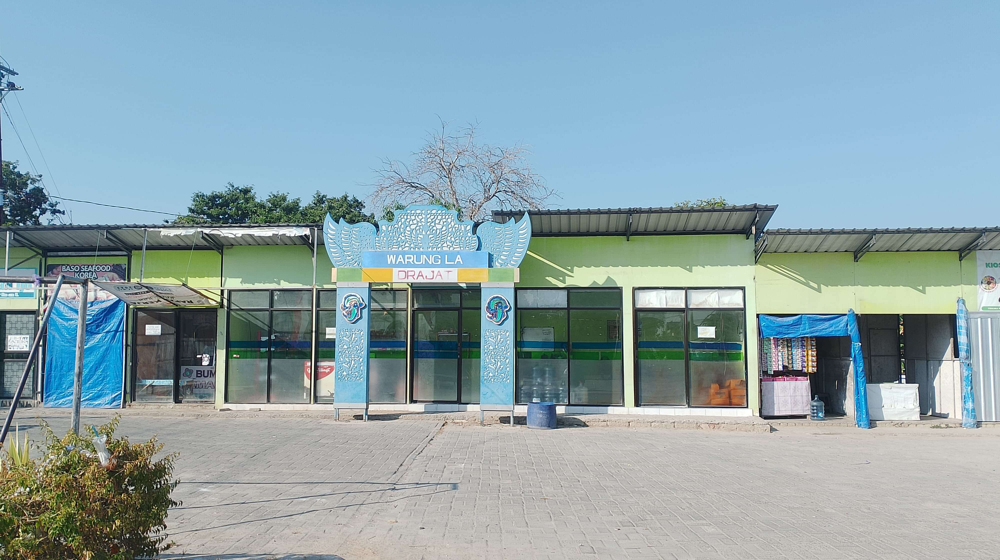
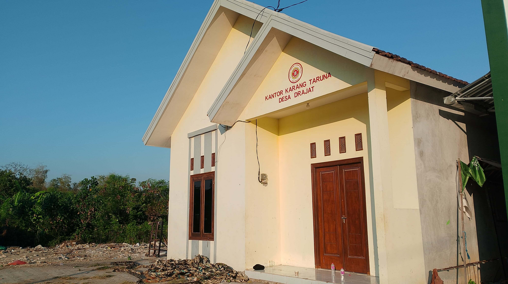

Gapura Desa DrajatPonten Makam Sunan DrajatGapura Makam Sunan Drajat

Makam Sunan Drajat

Pendopo Makam Sunan Drajat

Area Makam Sunan DrajatMakam Sunan Drajat dari Sisi Lain

Masjid di Area Makam Sunan DrajatPeninggalan di Makam Sunan DrajatMuseum Sunan DrajatMasjid Jami' Al-Mubarok Desa Drajat

Kios BUMDES Desa Drajat

Gedung KARTAR Desa DrajatLapangan Desa Drajat